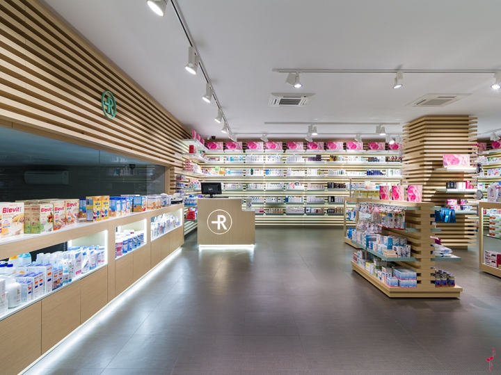
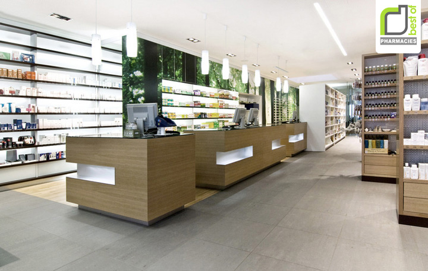
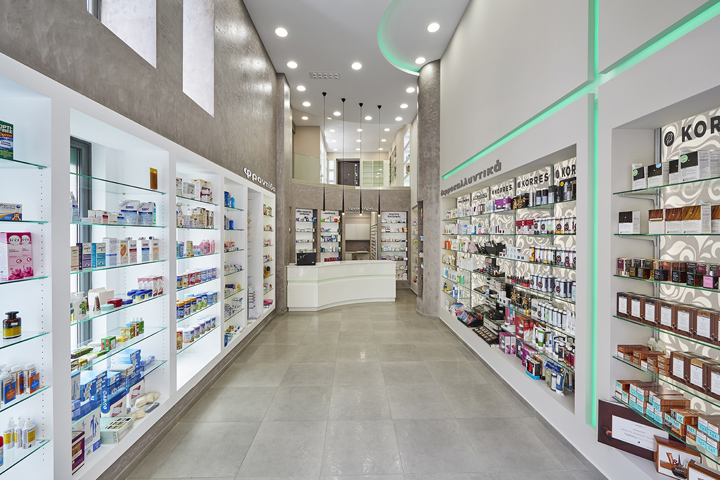

Meet The Neighborhood
The Problem
The Solution
AP Human Geography Project
By Joshua Gumm and Juel Pryor
Solving The Pharmacy Crisis In Chatham
 Google Earth
Google Earth
This is our location of where we'll be building our new pharmacy. We chose this location because it has the space we require for the new building, it also fits the area demographic of the people we are trying to help, it's in an area where the 2 pharmacies in the neighborhood arent super close at least 20-30 mins walking away for the people who don't have transportation
 Google Maps
Google Maps
As you can see our location that we chose to build our new pharmacy is even close to bus stops and it's a main street so it could be easily accessible and recognizable, it is also right down the street from the 79th red line station so people from neighboring neighborhoods like Auburn Gresham, and Brainerd could come to the pharmacy if they don't have one.

Blog: Little Runaway

Blog: Retail Design

Blog: Shelf Obsessed
This is what our pharmacy will look like in the inside when built. This new modern style could bring in new investments and could attract more business to revitalize the neighborhood. Us building this pharmacy would solve the issue, and has a high chance of us increasing life expectancy and possibly even improving the amount of kids who go to college, So this is our proposal to build a new Pharmacy in Chatham.
Back To The Top